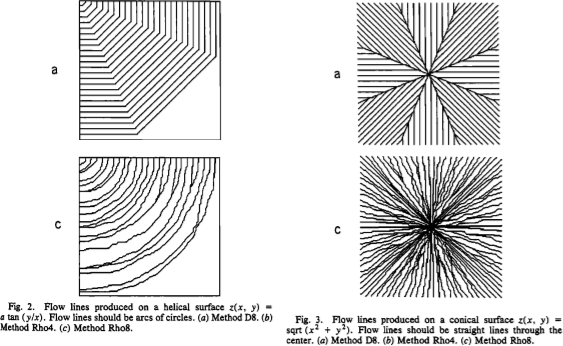
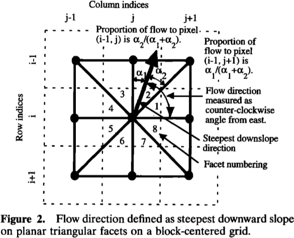
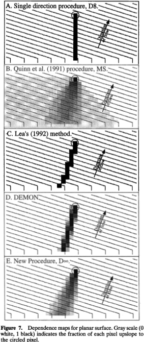

Flow Metrics¶
A flow metric is a rule which apportions the flow passing through a cell into one or more of its neighbours.
The problem of how to best do this has been considered many times, since it is difficult to discretize flow onto a grid, and a number of solutions have been presented. Rather than choosing one, RichDEM instead incorporates many and leaves it to the user to decide which is appropriate.
Below, the various flow metrics included in RichDEM are discussed.
Wherever possible, algorithms are named according to the named according to
their creators as well as by the name the authors gave the algorithm. For
instance, FM_Rho8 and FM_FairfieldLeymarie refer to the same function.
Note that, in some cases, it is difficult or impossible to include a flow metric because the authors have included insufficient detail in their manuscript and have not provided source code. In these cases, the flow metric will either be absent or a “best effort” attempt has been made at implementation.
Data Format¶
All flow metric functions are prefixed with !`FM_`.
Flow metric functions return a flat array with !`width*height*N` elements, where
N is the number of neighbours each cell has (recalling that RichDEM uses a
regular grid). In this system, the flow from a given cell!`(x,y)` to its
neighbour !`n` is stored at !`N*(y*width+x)+n`. There is not yet a convenience
wrapper around these arrays (TODO).s
Convergent and Divergent Metrics¶
The greatest difference between flow metrics is in whether they are convergent or divergent. In a convergent method rivers only ever join: they never diverge or bifurcate. This means that landscape structures such as braided rivers cannot be adequately represented by a convergent method.
In a divergent method rivers may join and split, so braided rivers can be represented.
In general, convergent methods are simpler and therefore faster to use. There is a large diversity of divergent methods.
Note on the examples¶
Epsilon depression-filling replaces a depression with a predictable, convergent flow pattern. Beauford watershed has a number of depressions, as is evident in the example images below. A flow metric should not necessarily be judged by its behaviour within a filled depression. For convenience, a zoomed view of a non- depression area is shown and, at the end of this chapter, the views are compared.
D8 (O’Callaghan and Mark, 1984)¶
O’Callaghan, J.F., Mark, D.M., 1984. The Extraction of Drainage Networks from Digital Elevation Data. Computer vision, graphics, and image processing 28, 323–344.
The D8 method assigns flow from a focal cell to one and only one of its 8 neighbouring cells. The chosen neighbour is the one accessed via the steepest slope. When such a neighbour does not exist, no flow direction is assigned. When two or more neighbours have the same slope, the chosen neighbour is the first one considered by the algorithm.
This is a convergent, deterministic flow method.
import richdem as rd
import numpy as np
dem = rd.rdarray(np.load('imgs/beauford.npz')['beauford'], no_data=-9999)
rd.FillDepressions(dem, epsilon=True, in_place=True)
accum_d8 = rd.FlowAccumulation(dem, method='D8')
d8_fig = rd.rdShow(accum_d8, zxmin=450, zxmax=550, zymin=550, zymax=450, figsize=(8,5.5), axes=False, cmap='jet')
(Source code, png, hires.png, pdf)
{kind=link}
{kind=link}
{kind=link}
| Language | Command |
|---|---|
| C++ | richdem::FM_OCallaghan() or richdem::FM_D8() |
Rho8 (Fairfield and Leymarie, 1991)¶
Fairfield, J., Leymarie, P., 1991. Drainage networks from grid digital elevation models. Water resources research 27, 709–717.
The Rho8 method apportions flow from a focal cell to one and only one of its 8 neighbouring cells. To do so, the slope to each neighbouring cell is calculated and a neighbouring cell is selected randomly with a probability weighted by the slope.
There is also a Rho4 method which RichDEM does not implement. (TODO)
This is a convergent, stochastic flow method.
{kind=link}
accum_rho8 = rd.FlowAccumulation(dem, method='Rho8')
rd.rdShow(accum_rho8, zxmin=450, zxmax=550, zymin=550, zymax=450, figsize=(8,5.5), axes=False, cmap='jet', vmin=d8_fig['vmin'], vmax=d8_fig['vmax'])
(Source code, png, hires.png, pdf)
{kind=link}
{kind=link}
{kind=link}
| Language | Command |
|---|---|
| C++ | richdem::FM_Rho8() or richdem::FM_FairfieldLeymarie() |
Quinn (1991)¶
Quinn, P., Beven, K., Chevallier, P., Planchon, O., 1991. The Prediction Of Hillslope Flow Paths For Distributed Hydrological Modelling Using Digital Terrain Models. Hydrological Processes 5, 59–79.
The Quinn (1991) method apportions flow from a focal cell to one or more, and possibly all, of its 8 neighbouring cells. To do so, the amount of flow apportioned to each neighbour is a function \(\tan(\beta)^1\) of the slope \(\beta\) to that neighbour. This is a special case of the Holmgren (1994) method.
This is a divergent, deterministic flow method.
accum_quinn = rd.FlowAccumulation(dem, method='Quinn')
rd.rdShow(accum_quinn, zxmin=450, zxmax=550, zymin=550, zymax=450, figsize=(8,5.5), axes=False, cmap='jet', vmin=d8_fig['vmin'], vmax=d8_fig['vmax'])
(Source code, png, hires.png, pdf)
{kind=link}
{kind=link}
{kind=link}
| Language | Command |
|---|---|
| C++ | richdem::FM_Quinn() |
Freeman (1991)¶
Freeman, T.G., 1991. Calculating catchment area with divergent flow based on a regular grid. Computers & Geosciences 17, 413–422.
The Freeman (1991) method apportions flow from a focal cell to one or more, and possibly all, of its 8 neighbouring cells. To do so, the amount of flow apportioned to each neighbour is a function of the slope to that neighbour and a tuning parameter \(p\). In particular, the fraction \(f_i\) of flow apportioned to neighbour \(i\) is
Freeman recommends choosing \(p \approx 1.1\).
This is a divergent, deterministic flow method.
accum_freeman = rd.FlowAccumulation(dem, method='Freeman', exponent=1.1)
rd.rdShow(accum_freeman, zxmin=450, zxmax=550, zymin=550, zymax=450, figsize=(8,5.5), axes=False, cmap='jet', vmin=d8_fig['vmin'], vmax=d8_fig['vmax'])
(Source code, png, hires.png, pdf)
{kind=link}
{kind=link}
{kind=link}
| Language | Command |
|---|---|
| C++ | richdem::FM_Freeman() |
Holmgren (1994)¶
Holmgren, P., 1994. Multiple flow direction algorithms for runoff modelling in grid based elevation models: an empirical evaluation. Hydrological processes 8, 327–334.
The Holmgren (1994) method apportions flow from a focal cell to one or more, and possibly all, of its 8 neighbouring cells. To do so, the amount of flow apportioned to each neighbour is a function of the slope that neighbour and a user-specified exponent \(x\). In particular, the fraction \(f_i\) of flow apportioned to neighbour \(i\) is
This is a generalization of the Quinn (1991) method in which the exponent is 1. As \(x \rightarrow \infty\), this method approximates the D8 method.
Holmgren recommends choosing \(x \in [4,6]\).
This is a divergent, deterministic flow method.
accum_holmgren = rd.FlowAccumulation(dem, method='Holmgren', exponent=5)
rd.rdShow(accum_holmgren, zxmin=450, zxmax=550, zymin=550, zymax=450, figsize=(8,5.5), axes=False, cmap='jet', vmin=d8_fig['vmin'], vmax=d8_fig['vmax'])
(Source code, png, hires.png, pdf)
{kind=link}
{kind=link}
{kind=link}
| Language | Command |
|---|---|
| C++ | richdem::FM_Holmgren() |
D∞ (Tarboton, 1997)¶
Tarboton, D.G., 1997. A new method for the determination of flow directions and upslope areas in grid digital elevation models. Water resources research 33, 309–319.
The D∞ method apportions flow from a focal cell between one or two adjacent neighbours of its 8 neighbouring cells. To do so, a line of steepest descent is calculated by doing localized surface fitting between the focal cell and adjacent pairs of its neighbouring cell. This line often falls between two neighbours.
This is a divergent, deterministic flow method.
 {kind=link}
{kind=link}
accum_dinf = rd.FlowAccumulation(dem, method='Dinf')
rd.rdShow(accum_dinf, zxmin=450, zxmax=550, zymin=550, zymax=450, figsize=(8,5.5), axes=False, cmap='jet', vmin=d8_fig['vmin'], vmax=d8_fig['vmax'])
(Source code, png, hires.png, pdf)
{kind=link}
{kind=link}
{kind=link}
| Language | Command |
|---|---|
| C++ | richdem::FM_Tarboton() or richdem::FM_Dinfinity() |
{kind=link}
{kind=link}
{kind=link}
{kind=link}
{kind=link}
{kind=link}